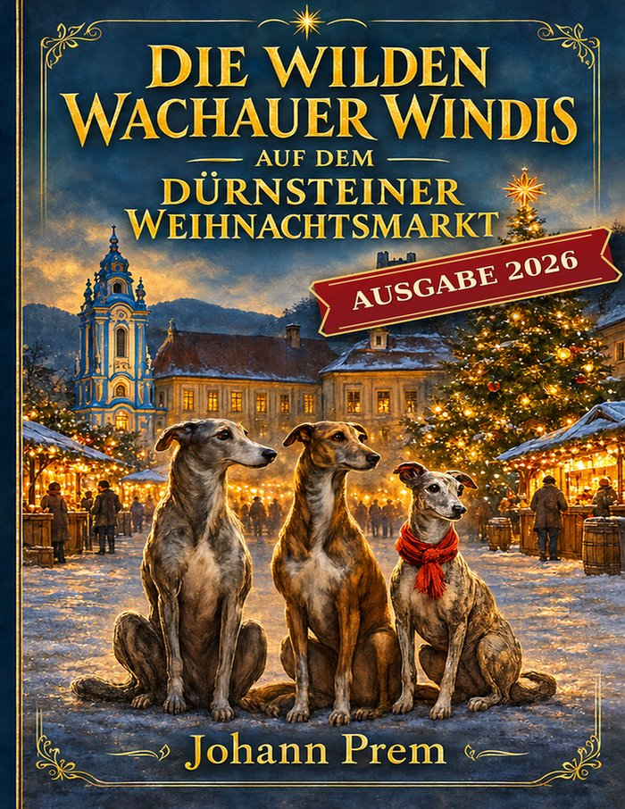

Weihnachtsgeschichte aus der Wachau
Die wilden Windis auf dem Dürnsteiner Weihnachtsmarkt
Ein verschwundener Weihnachtsstern, zwei freche Böcke und drei Windhunde, die dem Geheimnis auf die Spur kommen.
In Dürnstein liegt Weihnachtszauber in der Luft. Doch Hansi und Franzi sorgen für Durcheinander, und plötzlich fehlt der goldene Weihnachtsstern. Fidel, Gloria und Pia ziehen gemeinsam mit der Familie los – durch die Gassen Dürnsteins und hinein in eine Geschichte voller Witz und Wachauer Atmosphäre.
Von Pia Ordelia und Johann Prem
103 Seiten · 24 Kapitel · Deutsch
Preise nach Prüfung vom 17.11.2026; aktuelle Preise und Verfügbarkeit bitte auf Amazon kontrollieren. Beide Schaltflächen öffnen die Buchseite mit den verfügbaren Ausgabeformaten.